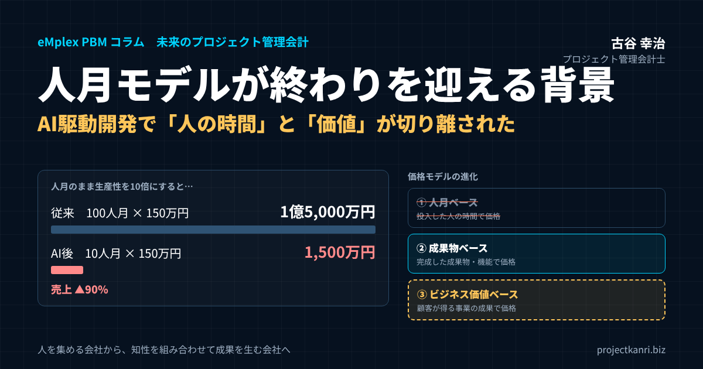

人月モデルが終わりを迎える背景―AI駆動開発で変わるシステム開発のビジネスモデルとプロジェクト管理会計

結論：人月モデルが終わりを迎える背景は「人の時間」と「価値」が切り離されたこと
プロジェクト管理会計研究所の古谷です。最初に結論を申し上げます。システム開発の世界で長く続いてきた人月モデルが終わりを迎えようとしている最大の背景は、AI駆動開発の広がりによって、「投入した人の時間」と「顧客に届ける価値」が切り離されたことにあります。人月モデルは、「価値は、かけた人の時間に比例する」という前提の上に成り立ってきました。その前提が崩れたとき、人の時間で値段を決める商売は、根拠を失います。
この記事の要点：人月モデルが終わりを迎える背景
- 背景①：AI駆動開発で「投入した人の時間」と「生み出す価値」が切り離された
- 背景②：人月のまま生産性を10倍にすると売上は9割減る（人月の自己矛盾）
- 背景③〜⑤：顧客が成果で価値を測り始めた／IT人材不足と多重下請の限界／競争力の源泉が人数から組織の知識へ
- 次のモデル：人月ベース→成果物ベース→ビジネス価値ベース。当面はハイブリッド契約が現実解
- 管理会計：稼働率と人月単価の管理から、案件別粗利・人時粗利・AI費用を含む原価の管理へ
ここ一、二年、システム開発会社の経営者の方々とお話しすると、同じような戸惑いを耳にするようになりました。数年前なら十数名の体制で1年近くかけていたはずの規模の案件が、AIを前提にした開発では数名の体制で回る見込みが立つ。プロジェクトとしては極めて真っ当で、品質もむしろ上がる。ところが、それを人月の見積表に落とすと、金額が数分の一になってしまい、会社の売上の計画が成り立たない。生産性が上がったのに、経営としては喜べない。この矛盾こそが、人月モデルの終わりの始まりを象徴しています。
私はこれまで、プロジェクト管理会計士として200社を超えるプロジェクト型ビジネスの経営管理を支援してきました。その中には、システム開発会社、SIer、ITコンサルティング会社も数多く含まれます。人月単価と稼働率で売上を読み、工数で原価を管理する。人月モデルは、管理のしやすさという点では、実によくできた仕組みでした。だからこそ、その前提が崩れるときの影響は、営業や開発の現場だけでなく、会社の数字の作り方、つまり管理会計の仕組みそのものに及びます。
本稿では、人月モデルとは何か、なぜ日本のIT業界にここまで定着したのかを整理したうえで、人月モデルが終わりを迎える五つの背景を順に見ていきます。そのうえで、人月の次に来る価格のモデル、成果型への移行に立ちはだかる三つの壁、移行期の経営課題、そしてプロジェクト管理会計がどう変わるべきかを、私の実務の経験を交えてお伝えします。最後に、よくいただく質問をFAQにまとめました。
なお、本稿で扱う「人月モデル」は、主にシステム開発やITサービスの業界を念頭に置いていますが、同じ構造は、コンサルティング、広告制作、設計事務所など、人の時間を売ってきたプロジェクト型ビジネスの多くに共通しています。AIによって人の時間と価値が切り離されるという変化は、業界を越えて広がっていくでしょう。自社の業界に置き換えながら読んでいただければ幸いです。
私自身、エンプレックスでCFOを務めていた頃、受託開発の案件で、見積の人月と実績の工数の差を毎月追いかけていました。当時は、人月を正確に見積もり、予算の人月の中に収めることが、利益を守る最善の方法でした。それから20年余りがたち、その前提が根本から変わろうとしていることに、私は大きな時代の転換を感じています。
先にお断りしておくと、人月モデルが明日すぐに消えてなくなるわけではありません。大企業の予算や稟議は、今も「人月×期間」で組まれていますし、多くの開発会社の売上の大半は、今も人月をベースにした契約です。しかし、方向性ははっきりしています。変わるのはスピードだけです。その変化を、脅威として受け止めるのか、ビジネスモデルを進化させる機会として捉えるのか。その分かれ道に、日本のシステム開発業界は立っていると私は考えています。
人月モデルとは：仕組みと、日本のIT業界に定着した理由
まず、人月モデルとは何かを確認しておきます。人月とは、一人が一か月働く作業量を一単位とする考え方です。10人が6か月働けば60人月、5人が12か月働いても60人月です。人月モデルとは、この人月を単位として、開発の規模を見積もり、価格を決め、体制を組み、進捗と原価を管理するビジネスの仕組み全体を指します。
価格の決め方は単純です。必要な人月に、技術者のスキルや役割に応じた人月単価を掛ける。たとえば、100人月の開発で、平均の人月単価が150万円であれば、価格は1億5,000万円です。準委任契約やSES（システムエンジニアリングサービス）のように、技術者の稼働に対して月額で対価を受け取る契約では、人月単価×稼働人数×期間がそのまま売上になります。一括請負の契約でも、見積の内訳は多くの場合、工程ごとの人月の積み上げで作られています。
| 項目 | 人月モデルでの考え方 |
|---|---|
| 規模の測り方 | 人月（1人×1か月）の積み上げ。10人×6か月＝60人月 |
| 価格の決め方 | 必要人月×人月単価（例：100人月×150万円＝1億5,000万円） |
| 主な契約形態 | 準委任・SES（稼働に対価）、一括請負（見積内訳は人月の積算） |
| 体制の組み方 | 工程ごとに専門の人を配置。元請から多重下請で技術者を集める |
| 管理の指標 | 稼働率、人月単価、予算人月と実績工数の差 |
人月モデルが日本のIT業界にこれほど定着した理由は、いくつかあります。一つ目は、分かりやすさです。発注者にとっても受注者にとっても、「何人が何か月働くか」は直感的に理解しやすく、稟議や予算の説明にも使いやすい。二つ目は、リスクの分担のしやすさです。ソフトウェアの開発は、作ってみなければ分からない要素が多く、成果物の完成を約束する請負は受注者のリスクが大きい。稼働に対して対価を払う準委任であれば、仕様の変更や追加のリスクを、発注者と受注者で分け合うことができます。
三つ目は、多重下請の構造との相性です。元請のSIerが案件を受注し、二次、三次の協力会社から技術者を集めて体制を組む。この構造では、人月単価が取引の共通言語になります。元請は人月単価で受注し、協力会社には一段低い人月単価で発注し、その差額が利益になる。人を集めて配置する能力そのものが、ビジネスの源泉になってきました。四つ目は、管理のしやすさです。売上は稼働人数と単価で読め、原価は工数と給与で計算できる。稼働率を上げれば利益が増える。管理会計の観点から見ても、人月モデルは非常に扱いやすい仕組みでした。
私がエンプレックス（現SCSK）でCFOを務めていた頃も、受託開発の案件の採算は、基本的に人月の考え方で管理していました。見積の段階で工程ごとの人月を積み上げ、実行の段階で工数の実績と比べ、予算の人月を超えそうな案件を早めに見つける。この管理の仕組みが、後にプロジェクトバジェット・マネジメントシステム「eMplex PBM」の原型になりました。人月は、プロジェクトの原価を管理するための、優れた「物差し」だったのです。
ただし、ここで一つ区別しておきたいことがあります。人月を「原価を管理する物差し」として使うことと、人月を「価格を決める根拠」として使うことは、別の話です。私が本稿で「人月モデルが終わる」と言うとき、終わりを迎えるのは主に後者、つまり人の時間をそのまま顧客への価格に換算する商売の仕方です。人の時間を原価として管理する必要性は、これからも残ります。この区別が、後ほど述べるプロジェクト管理会計の変化を理解する鍵になります。
人月モデルには、見落とされがちな副作用もありました。それは、受注者にとって「効率よく早く終わらせる」動機が働きにくいという点です。稼働の時間に対して対価を受け取る契約では、作業を効率化して早く終わらせるほど、売上が減ってしまいます。もちろん、多くの技術者や開発会社は誠実に仕事をしていますが、仕組みとして生産性の向上が報われにくい構造だったことは否定できません。AIによる生産性の飛躍は、この構造的な問題を、一気に表面化させたとも言えます。
人月モデルが終わりを迎える背景①：AI駆動開発で「工数」と「成果」が切り離された
一つ目の背景、そして最大の背景は、AI駆動開発の急速な進化です。生成AIが登場した当初、開発の現場での使い方は、コードの補完や、ちょっとした調べものの手伝いが中心でした。しかし、ここ一、二年で状況は一変しました。AIのエージェントが、仕様を読み、設計を考え、コードを書き、テストを作り、不具合を直すところまで、まとまった仕事を任されるようになっています。
公開されている事例を一つご紹介します。OpenAIが2026年5月に公開したCiscoの事例では、Ciscoが新しく作ったAI機能の95％以上をOpenAIのCodexが作成し、Codexによる不具合修正の処理能力が10〜15倍に向上したと報告されています。数四半期かかっていた機能の提供が数週間に短縮された、という記述もあります。もちろん、これは先進的な一企業の事例であり、すべての開発にそのまま当てはまるわけではありません。しかし、「人が書く量」と「できあがる機能の量」の関係が、根本から変わり始めていることを示す事例であることは間違いありません。
AIのエージェントがこなせる仕事の大きさも、急速に伸びています。AIの能力を評価している研究機関METRの分析では、AIが自律的にやり遂げられるソフトウェアのタスクの長さ（人間の専門家なら何時間かかる仕事か）は、おおむね7か月ごとに倍増する傾向が続いているとされています。ベンチマーク上の能力が、そのまま実務での自律性を意味するわけではありませんが、AIに任せられる仕事の単位が、数分の作業から、数時間、数日の仕事へと広がっていく方向性ははっきりしています。
こうした変化が、人月モデルにとってなぜ決定的なのか。人月モデルの根本にあるのは、「同じ成果を出すには、同じくらいの人の時間が必要だ」という前提です。だからこそ、人月で規模を測り、人月で値段を決めることができました。ところが、AIを使う会社と使わない会社とで、同じ成果を出すのに必要な人の時間が数倍、場合によっては十倍以上も違うとなれば、人月はもはや成果の大きさを測る物差しになりません。人月で見積もった金額は、成果の価値ではなく、その会社のAIの使いこなしの度合いを表すだけの数字になってしまいます。
| 人月モデルの前提 | AI駆動開発で起きている変化 |
|---|---|
| 同じ成果には同じくらいの人の時間が必要 | AIの使いこなし次第で必要な人の時間が数倍〜十倍以上違う |
| 工程ごとに人を配置して積み上げる | 成果を起点に、人とAIエージェントが一体で回す |
| 人が書くコードの量が成果の量 | 新機能の95%以上をAIが作成する事例も（Cisco・2026年公開） |
| 人月は成果の大きさの物差し | 人月はAI活用度合いを表すだけの数字に |
※Ciscoの事例はOpenAIが2026年5月に公開したもの。
開発の工程そのものも変わりつつあります。これまでのシステム開発は、要件定義、設計、実装、テスト、リリース、保守という工程に、それぞれ専門の人を配置して流してきました。人月の見積も、この工程ごとの人の配置を積み上げて作られてきました。AIを前提にした開発では、顧客が実現したい成果を起点に、業務の分析、既存システムの解析、要求の整理、仕様の作成、実装、テスト、改善までを、人とAIのエージェントが一体となって回していきます。人は工程を担当するのではなく、成果に責任を持つ。工程ごとに人を積み上げるという、人月の見積の土台そのものが変わろうとしているのです。
変わるのはコーディングだけではありません。調査、資料の作成、テスト、ドキュメント、運用の監視、データの処理。これまで人月の中で大きな割合を占めてきた作業の多くが、AIに任せられるようになりつつあります。AIが人を補助するというより、人の周りにAIのエージェントのチームが形づくられる、と言ったほうが実態に近いかもしれません。
現場の感覚としても、変化ははっきりしています。AIを前提に開発を進めると、プロジェクトの途中で、AIの出力の品質をどう制御するか、AIにどんな情報を渡すべきかといった試行錯誤は必要になります。しかし、その仕組みが整うにつれて、少人数の体制でも品質を落とさずに、むしろ品質を高めて納品できる例が増えています。億単位の大規模な案件でさえ、後半で工数が膨らむことなく、計画通りに完了するケースが出てきています。こうした実績が積み上がるほど、人月の見積は、現実の開発の姿から離れていきます。
AIの利用が広がっているのは、開発の部門だけではありません。法務、営業、企画といった部門でも、AIのエージェントに仕事を任せる動きが急速に進んでいます。開発の工程の完全な自動化よりも、むしろ周辺の業務のAI化のほうが先に進んでいる面もあります。いずれにしても、「人が時間をかけて作業する」ことを前提にした仕事の値付けは、開発に限らず、あらゆる知識労働で見直しを迫られていくでしょう。
人月モデルが終わりを迎える背景②：生産性10倍で売上9割減という人月の自己矛盾
二つ目の背景は、経営の数字の上で起きる矛盾です。これは管理会計の視点から最も重要な論点ですので、数字で確認しておきましょう。
いま、100人月×人月単価150万円＝1億5,000万円という開発案件があるとします。この案件が、AI駆動開発によって10人月で終わるようになったとします。人月単価が同じままなら、売上は1,500万円。売上は9割減ります。つまり、人月で値段を決める商売のまま生産性を10倍にすると、売上は10分の1になってしまうのです。
| 項目 | 従来（人月） | AI後・人月のまま | AI後・価値ベース |
|---|---|---|---|
| 投入人月 | 100 | 10 | 10 |
| 価格（売上） | 15,000（100人月×150万） | 1,500（10人月×150万） | 8,000（顧客価値で設定） |
| 原価（1人月100万） | 10,000 | 1,000 | 1,000 |
| 粗利 | 5,000 | 500 | 7,000 |
| 顧客の支払 | 15,000 | 1,500 | 8,000（従来の約半額） |
※説明用の単純化した数値例。AIの利用費用等は省略。
もちろん、原価も下がります。人月あたりの原価が100万円だとすれば、100人月の原価は1億円、粗利は5,000万円でした。10人月になれば原価は1,000万円、粗利は500万円です。粗利率は同じ33％でも、粗利の金額は10分の1になります。会社の固定費、つまり管理部門の人件費やオフィスの家賃、AIのツールの費用は、売上が減っても同じようには減りません。粗利の金額が10分の1になれば、会社は確実に赤字に転落します。
では、浮いた90人月分の社員を別の案件に回せばよいのではないか、と考える方もいるでしょう。理屈としてはその通りですが、それには今の10倍の数の案件を受注し続ける必要があります。市場全体でAIによる生産性の向上が進めば、同じ予算で発注される案件の規模も縮みますから、案件の数を10倍にするのは現実的ではありません。結局、人月で値段を決める限り、生産性の向上は、自らの売上を削る行為になってしまうのです。
一方、AIの効果を受け取る側を変えると、景色はまったく変わります。顧客にとっての価値、つまりシステムが生み出す成果が1億5,000万円の価値を持つのであれば、その価値に基づいて価格を決める限り、AIで原価が10分の1になった分は、受注者の利益になるか、顧客への値下げとして分け合うことができます。たとえば価格を8,000万円に下げても、原価が1,000万円であれば、粗利は7,000万円です。顧客は従来の約半額でシステムを手に入れ、受注者は従来以上の利益を得る。生産性の向上が、双方の利益になるのです。
ここで大切なのは、すでに一括請負の固定価格で受注している案件では、AIによる生産性の向上は、そのまま受注者の利益の改善になるということです。危機に直面するのは、主に準委任やSESのように、稼働の時間に対して対価を受け取る契約の比率が高い会社です。自社の売上のうち、どれだけが人の時間に連動して決まっているのか。この比率を把握することが、人月モデルの終わりに備える最初の一歩になります。
人月単価を上げればよいのではないか、という考え方もあります。確かに、AIを使いこなす技術者の生産性は高いのですから、人月単価を上げる理屈は立ちます。しかし、人月単価を数倍にすることを顧客に納得してもらうのは容易ではありません。顧客の側から見れば、「同じ人月なのに、なぜ単価がこんなに高いのか」という問いに答えなければならないからです。結局、人月という単位のまま価格を説明する限り、生産性の向上の価値を顧客に伝えることは難しいのです。
この自己矛盾は、経営会議の場で最も鮮明に表れます。現場からは、AIを活用した合理的な少人数の体制案が上がってくる。しかし、それを人月の見積表に落とすと、売上の計画に大きな穴が開く。経営者は、生産性の向上という本来は喜ぶべき変化を前に、手が止まってしまうのです。この戸惑いを感じている経営者の方は、決して少なくないはずです。
人月モデルが終わりを迎える背景③：顧客が「工程」ではなく「成果」で価値を測り始めた
三つ目の背景は、発注者の側の変化です。これまで、システム開発の発注者は、「このシステムを、この仕様で作ってください」と依頼してきました。受注者は、その仕様を満たすための工程を丁寧に踏み、その工程にかかった人の時間で対価を受け取ってきました。工程をどれだけ丁寧に踏んだかが、品質と価格の根拠になっていたのです。
ところが、DXの取り組みが進むにつれて、発注者の関心は、システムそのものよりも、システムがもたらす事業の成果へと移っています。「解約率を2割下げたい」「受注率を上げたい」「このバックオフィスの業務を半分にしたい」。こうした成果を実現するための手段として、システムを位置づけるようになりました。そして、AIによって開発が速くなるほど、発注者は「どれだけ丁寧に工程を踏んだか」ではなく、「どれだけ速く、確かな成果が出たか」で価値を測るようになります。
開発のスピードが上がれば、作ってみて、使ってみて、直すというサイクルを短い期間で何度も回すことができます。大がかりな要件定義に何か月もかけるより、まず小さく作って成果を確かめる方が合理的になる。そうなると、最初に人月を積み上げて全体の価格を決めるという見積の方法そのものが、発注者にとっての合理性を失っていきます。
顧客が成果で価値を測り始めれば、工程を積み上げて値付けする商売の根拠は崩れていきます。「当社は何人月を投入しました」という説明は、もはや価格の正当性を示す材料にはなりません。発注者が知りたいのは、「その投資で、どれだけの成果が得られるのか」だからです。
この変化は、発注者の側にも課題を突きつけます。成果で価値を測るには、成果を定義し、測定する力が必要です。解約率や受注率、業務時間といった指標を、システムの導入の前後で正しく比べられるか。発注者がこうした力を持つかどうかも、人月からの移行のスピードを左右する要因になります。
発注者の関心が成果に移ると、システムの開発と運用の境目もあいまいになります。作って納品したら終わり、ではなく、使われ方を分析し、改善を続けて成果を高めていく。こうした継続的な関係では、開発の工程ごとの人月よりも、成果の改善の度合いや、継続的な利用に対する対価のほうが、価格の根拠として自然です。
人月モデルが終わりを迎える背景④：IT人材不足・単価上昇と多重下請構造の限界
四つ目の背景は、人の確保をめぐる構造の変化です。経済産業省の試算では、2030年には最大で約79万人のIT人材が不足する可能性があるとされてきました。技術者の採用の競争は激しさを増し、人月単価は上昇を続けています。人を集めて配置することがビジネスの源泉だった人月モデルにとって、人が集まらない、集まっても高いという状況は、モデルの根幹を揺るがします。
多重下請の構造も、限界を迎えつつあります。元請から二次、三次と下請の階層が重なるほど、中間でのマージンが積み上がり、実際に手を動かす技術者の処遇は低くなります。また、どの会社のどの技術者が、どの作業に責任を持っているのかが見えにくくなり、品質と生産性の両面で問題が生じやすくなります。
制度の面でも変化があります。2024年11月にはフリーランス新法が施行され、個人の技術者への業務委託について、取引条件の明示や報酬の支払期日などのルールが定められました。2026年1月には、下請法が改正されて取適法として施行され、手形による支払の禁止や、協議に応じない一方的な代金の決定の禁止などが加わりました。人を多層的に集めて配置するビジネスは、法令の面でも、これまで以上に丁寧な管理が求められるようになっています。
人が足りない、単価が上がる、多重の構造にも限界がある。この状況で、人月を積み上げて価格を決めるモデルを続けようとすれば、発注者にとっての価格は上がり続け、受注者にとっての人の確保は難しくなり続けます。少ない人数で成果を出せるAI駆動開発は、この行き詰まりに対する答えでもあります。人を集める会社から、少ない人数とAIで成果を生み出す会社へ。人材不足は、その転換を後押しする追い風になっているのです。
人材不足は、人月単価の上昇を通じて、発注者の予算も圧迫しています。同じ規模のシステムを作るのに、数年前より高い予算が必要になる。発注者は、人月の見積を前にして、「なぜこんなに高いのか」と感じ、受注者は「これ以上は下げられない」と感じる。この行き詰まりを解消するには、人の時間ではなく、成果の価値で価格を語る共通の言葉が必要になります。
人材不足の時代に、少ない人数で大きな成果を出せる会社は、採用の面でも有利になります。一人ひとりが大きな成果に責任を持ち、AIを使いこなして高い付加価値を生み出せる環境は、優秀な技術者にとって魅力的だからです。人を大量に集める競争から、少数の優秀な人が力を発揮できる環境をつくる競争へ。人材をめぐる競争の在り方そのものが変わりつつあります。
人月モデルが終わりを迎える背景⑤：競争力の源泉が「人数」から「組織の知識」へ移った
五つ目の背景は、システム開発会社の競争力の源泉そのものの変化です。これまで、優秀な開発会社とは、優秀なエンジニアを多く抱える会社でした。「何名体制で対応できますか」という質問が、商談でも採用でも必ず投げかけられてきたのは、人数が能力の代わりの指標になっていたからです。
ところが、AIのモデルは、どの会社でも同じように利用できます。競合他社も、まったく同じAIのツールを使えます。つまり、AIそのものは競争の優位にはなりません。差がつくのは、そのAIにどれだけ良い仕事をさせられるか、です。そして、AIに良い仕事をさせる鍵は、AIに渡す文脈（コンテキスト）にあります。
たとえば、ある金融機関の案件で、AIのエージェントに新しい機能の開発を任せるとします。会社固有の文脈がなければ、AIは一般論のコードしか書けません。しかし、そのAIが、過去の議事録、顧客の考え方、システムの構成、過去の設計の判断とその理由、障害の履歴、セキュリティの方針、開発の標準を理解していたらどうでしょうか。同じAIでも、生み出す成果の質はまったく違うものになります。同じAIのモデルを使っていても、チームによって成果の質が大きく異なる。その差を生んでいるのは、AIに渡している文脈の厚みなのです。
ここから導かれるのは、これからの開発会社の最大の資産は、人数でもコードでもなく、「組織の記憶」だということです。ベテランの頭の中にしかなかった判断の基準、過去の案件の成功と失敗、顧客ごとの業務の知識。これらをAIが使える形に整理し、案件をこなすたびに蓄積していく会社は、案件を重ねるほど賢くなっていきます。100件目の案件のAIは、1件目の案件のAIよりはるかに優秀になっている。仕事をするたびに会社自体が賢くなる。これが、これからの開発会社の競争力の姿です。
| 観点 | これまで | これから |
|---|---|---|
| 優秀な会社とは | 優秀なエンジニアが多い会社 | AIが優秀に働ける環境を構築できる会社 |
| 最大の資産 | 人数とスキル | 組織の記憶（顧客・業務・設計判断・失敗の知識） |
| 差がつく要因 | 人の採用と配置 | AIに渡す文脈の厚み、評価と学習の仕組み |
| 会社の能力を問う質問 | 何人のエンジニアがいますか | どれだけの知性を組み合わせて成果を出せますか |
この変化は、人月モデルとは根本的に相容れません。人月モデルでは、会社の能力は人数で測られ、価格は人の時間で決まります。しかし、組織の記憶によって生産性が高まるほど、必要な人の時間は減り、人月で測った会社の規模は小さく見えます。「何人のエンジニアがいる会社ですか」という問いは、やがて「どれだけの知性を組み合わせて成果を出せる会社ですか」という問いに置き換わっていくでしょう。人数を売る商売から、組織の知識を成果に変える商売へ。それが、人月モデルの終わりの、最も深い背景だと私は考えています。
組織の記憶を蓄積するうえで、私が特に重要だと考えているのは、失敗の記録です。あるプロジェクトで「この画面の設計は利用者に理解されなかった」という事実が分かったとします。多くの会社では、それはチャットのやり取りで終わるか、良くて振り返りの議事録に残るだけです。そして半年後、別のチームが同じ失敗を繰り返す。失敗の事実を、次の案件のAIが参照できる形で蓄積しておけば、失敗は自動的に次の案件に生かされます。組織の学習が、仕組みとして実装されるのです。
それでも人月モデルが残る領域と、当面の付き合い方
ここまで人月モデルの終わりを論じてきましたが、公平を期すために、人月モデルが当面は残る領域についても触れておきます。変化の方向は明らかでも、その速さは領域によって大きく異なるからです。
一つ目は、規制や安全性の要件が厳しい領域です。金融機関の勘定系のシステム、医療、社会インフラの制御のように、障害が社会に大きな影響を与える領域では、AIに数週間分の仕事を自律的に任せることには、まだ慎重にならざるを得ません。人が一つひとつの判断を確認し、責任を持つ工程が残る以上、人の時間に基づく見積と契約も、当面は残るでしょう。
二つ目は、発注者の側の制度が変わらない領域です。官公庁や大企業の多くは、予算の確保も、調達の手続きも、人月を前提に組み立てられています。受注者がどれだけ成果型の契約を提案しても、買う側の仕組みが変わらなければ、契約は成立しません。ここは、開発会社の努力だけでは動かせない部分です。
三つ目は、成果の定義が難しい領域です。研究開発的な要素の強い案件、要件がまったく固まっていない構想段階の支援、社内の人材育成を兼ねた伴走型の支援などでは、成果を事前に定義することが難しく、稼働に対して対価を払う準委任の形が合理的な場合もあります。
| 領域 | 人月が残る理由 | 当面の付き合い方 |
|---|---|---|
| 規制・安全性の要件が厳しい領域 | 人が判断を確認し責任を持つ工程が残る | 人月の中でAIによる品質・量の向上を示す |
| 発注者の制度が人月前提の領域 | 予算・調達・稟議が人月×期間で組まれている | 成果の説明を加え、制度の見直しを発注者と協議 |
| 成果の定義が難しい領域 | 研究開発的・構想段階・伴走型の支援 | 準委任を維持しつつ、成果物の報告を充実 |
大切なのは、人月の契約を続ける場合でも、その中身を変えていくことです。同じ準委任の契約でも、AIを活用して生産性を上げた分を、成果物の量や品質の向上として顧客に示す。人月単価の中に、AIの活用による付加価値を織り込む。月次の報告で、稼働の時間だけでなく、生み出した成果を示す。人月という契約の形は残っても、価値の説明の仕方を変えていくことで、次のモデルへの移行の準備になります。実際、多くの開発会社では、売上の大半が今も人月をベースにした契約です。いきなりすべてを変える必要はありません。人月を収益の土台として守りながら、その中身と説明の仕方を少しずつ変えていく。それが、現実的な付き合い方だと私は考えています。
また、人月の契約を続ける顧客に対しても、成果物ベースの見積を参考として併記してみることをお勧めします。同じ案件を、人月で見積もった場合と、成果物の単位で見積もった場合の両方を示すことで、顧客にも新しい価格の考え方に触れてもらうことができます。小さな提案の積み重ねが、買う側の意識と制度を少しずつ変えていきます。
人月の次に来るもの：成果物ベース・価値ベースへの3段階の進化
では、人月モデルの次には、どのような価格のモデルが来るのでしょうか。私は、システム開発の価格のモデルは、大きく三つの段階で進化していくと考えています。人月ベース、成果物ベース、そしてビジネス価値ベースです。
| 段階 | 価格の根拠 | 主な契約の例 | AIによる生産性向上の行き先 |
|---|---|---|---|
| ① 人月ベース | 投入した人の時間 | 準委任、SES、人月積算の請負 | 売上の減少（受注者に不利） |
| ② 成果物ベース | 完成した成果物・機能 | 一括請負の固定価格、機能単位の価格 | 受注者の利益改善（やがて価格引下げ圧力） |
| ③ ビジネス価値ベース | 顧客が得る事業の成果 | 成果報酬、レベニューシェア、成果連動サブスク | 顧客と受注者で価値を分配 |
第一段階の人月ベースは、ここまで見てきたとおり、投入した人の時間で価格を決めるモデルです。第二段階の成果物ベースは、完成したシステムや機能といった成果物に対して価格を決めるモデルです。一括請負の固定価格や、機能の単位、画面や帳票の数といった単位で価格を決める方法がこれに当たります。AIによる生産性の向上は、受注者の利益の改善として取り込めます。第三段階のビジネス価値ベースは、システムが顧客にもたらす事業の成果に基づいて価格を決めるモデルです。成果報酬、レベニューシェア、利用量や成果に連動したサブスクリプションなどがこれに当たります。
AIは、第二段階から第三段階への移行を、業界の意思とは関係なく早めていると私は見ています。成果物ベースの固定価格であれば、AIで原価が下がった分を利益として取り込めますが、発注者の側もAIの効果を知るにつれて、固定価格の水準そのものの引き下げを求めるようになるでしょう。最終的には、成果物の作業量ではなく、その成果物が生む事業の価値で価格を決める方向に向かわざるを得ません。
契約の単位も変わっていきます。これまでの「20人×6か月」という人の単位から、「ECサイトのコンバージョン率を改善する仕組み」「年間の受注業務の処理をAIで半分にする」「レガシーシステムを18か月で刷新する」といった、成果の単位へ。価格の決め方も、「原価＋利益」の積み上げから、顧客が得る価値の一部を受け取る「価値の分配」の考え方に近づいていきます。
ここで強調しておきたいのは、これは単なる値付けの方法の変更ではないということです。成果に連動して対価を受け取るということは、成果が出なければ対価も減るということです。受注者は、顧客の事業の成果に対してリスクを負う存在になります。言い換えれば、受託会社から、顧客の事業をともにつくる共創のパートナー、場合によっては半分投資家のような存在へと変わることを意味します。人月モデルの終わりとは、ビジネスモデルそのものの転換なのです。
ただし、すべての案件が第三段階に移るわけではありません。成果の定義が難しい案件、規制や安全性の要件が厳しい案件、発注者の予算の制度が人月を前提にしている案件では、当面は人月や成果物ベースの契約が続くでしょう。現実的には、案件の性質に応じて、三つの段階の価格のモデルを使い分ける時代がしばらく続くと考えるべきです。
価格のモデルが変われば、営業の在り方も変わります。人月モデルの営業は、「何名で、何か月で、いくらでできます」という提案でした。価値ベースの営業は、「この投資で、御社の事業の何が、どれだけ変わります」という提案です。顧客の事業を深く理解し、成果を数字で語れる営業の力が、これまで以上に問われるようになります。
サブスクリプション型のモデルも、有力な選択肢の一つです。システムを作って納品するのではなく、成果を生み続ける仕組みを月額や年額で提供する。開発と運用と改善を一体にして、継続的に対価を受け取る形です。受注者にとっては売上が安定し、発注者にとっては初期の投資を抑えられるという利点があります。
成果型への移行に立ちはだかる3つの壁：成果の合意・リスクの負担・売上の認識
成果型、価値型の契約への移行は、口で言うほど簡単ではありません。私が管理会計の立場から見て、特に大きいと考える壁が三つあります。
一つ目の壁は、成果の測り方を顧客と合意することです。たとえば、解約率が下がったとして、それが新しいシステムのおかげなのか、同じ時期に実施したキャンペーンのおかげなのか、市場全体の変化なのか。成果の要因を切り分けることは、思った以上に難しいものです。何を成果の指標とし、どの期間で、どのように測るのか。基準となる数値をどう決めるのか。この合意の形成だけで、数か月を要することも珍しくないでしょう。
二つ目の壁は、成果が出なかったときの損失を誰が引き受けるかです。成果連動の契約では、成果が出なければ、受注者の報酬はゼロに近づきます。その間も、受注者は人件費やAIの費用を支払い続けなければなりません。つまり受注者は、実質的にリスクを取って資金を投じる、リスクファイナンスの役割を担うことになります。どの程度のリスクまでなら引き受けられるのか、自社の財務の体力と照らし合わせた判断が必要です。
三つ目の壁は、会計上の売上の認識が不安定になることです。これは、上場企業や上場を目指す会社にとって、地味ですが非常に重い論点です。人月の準委任契約であれば、毎月の稼働に応じてきれいに売上が立ちます。ところが成果連動の契約では、収益認識に関する会計基準のもとで、成果に連動する部分は「変動対価」として扱われます。変動対価は、将来、大幅な減額が生じない可能性が非常に高い範囲でしか、売上として計上できません。成果が確定するまで売上が後ろにずれ、四半期ごとの売上の振れ幅も大きくなります。
| 壁 | 内容 | 対策の方向 |
|---|---|---|
| ① 成果の合意 | 成果の要因の切り分け、指標・期間・測定方法・基準値の合意 | 導入前の基準値の記録、測定方法を契約に明記 |
| ② リスクの負担 | 成果が出なければ報酬が減る＝実質的なリスクファイナンス | 固定部分＋成果連動部分のハイブリッド、引受上限の設定 |
| ③ 売上の認識 | 変動対価として計上が後ろ倒し、四半期の振れ幅拡大 | 早期に会計専門家と設計、資金繰りと業績予想の手当て |
三つ目の壁は、資金繰りにも直結します。人件費は毎月出ていくのに、売上と入金は成果が確定してからになる。移行期の会社は、この時間差を埋める資金を、あらかじめ確保しておかなければなりません。業績予想の精度も下がりやすくなりますから、上場会社であれば、投資家への説明の仕方も工夫が必要になります。私がCFOとして経験した上場企業グループの経営管理の感覚から言えば、売上の認識が不安定になることは、経営の管理の難しさを一段階引き上げます。成果型への移行を考える会社ほど、早い段階から会計と財務の専門家を巻き込んでおくべきです。
こうした壁があるからこそ、現実的な移行の形は、固定の部分と成果連動の部分を組み合わせたハイブリッドの契約になることが多いでしょう。たとえば、基本となる開発や運用の対価は固定の月額や成果物の価格で受け取り、成果の達成度に応じて追加の報酬を受け取る。受注者のリスクを抑えながら、成果に対する責任と報酬を少しずつ結びつけていく。こうした段階的な設計が、移行の現実解になると私は考えています。
実務上の工夫として、成果の指標を一つに絞りすぎないことも挙げておきます。一つの指標だけに報酬を連動させると、外部の要因でその指標が大きく動いたときに、受注者も発注者も納得できない結果になりがちです。複数の指標を組み合わせる、成果の達成の度合いに段階を設ける、報酬の上限と下限を決めておく。こうした設計によって、双方にとって受け入れやすい契約に近づけることができます。
成果型の契約では、契約書の作り方も重要になります。成果の定義、測定の方法、測定の時期、外部要因の扱い、成果が出なかった場合の取り扱い、途中で前提が変わった場合の見直しの手続き。これらを曖昧にしたまま契約すると、後で必ず争いの種になります。法務と経理の専門家を交えて、標準となる契約のひな形を整えておくことをお勧めします。
移行期の経営課題：人月を守りながら壊す「二階建て」、ジュニア育成、説明責任
人月モデルからの移行の方向が見えたとしても、そこにたどり着くまでの道のりには、経営として向き合わなければならない課題があります。私は、特に三つの課題が重要だと考えています。
一つ目は、キャッシュフローの課題、つまり「人月を守りながら人月を壊す」という難しさです。今いる社員の給料は、人月の売上で支払われています。その人月の売上を減らす方向に、自ら投資しなければならない。しかも、成果型の案件は、成果の合意に時間がかかり、売上の認識も後ろにずれます。組織の記憶をAIが使える形に整える仕組みへの投資は、回収までにさらに時間がかかります。移行期の会社は、人月で稼いだ利益で、成果型の案件の立ち上がりの赤字と、仕組みへの投資を賄う「二階建て」の経営をせざるを得ません。人月だけに頼れば数年後に事業は縮み、成果型だけに振り切れば目の前の資金が尽きる。二兎を追うしかないのです。
二つ目は、若手の人材が育たなくなるという課題です。AIが最初に代わりを務めているのは、実はベテランの仕事ではなく、若手の仕事です。簡単な実装、調査、テストのコード、ドキュメントの作成。これまで新人が最初の数年で手を動かしながら覚えてきた仕事が、そのままAIに移っています。少ない人数とAIで成果を出す体制では、その少ない人数は、成果に責任を持てるベテランでなければ機能しません。では、そのベテランは、どこから育ってくるのか。自ら設計し、自ら書き、失敗して学ぶという経験の階段がなくなったとき、10年後にベテランがいない会社が大量に生まれるおそれがあります。若手が育つ階段をどう設計し直すかは、採用の問題ではなく、事業の継続の問題です。
三つ目は、説明責任の課題です。AIのエージェントが設計の判断をし、コードを書く世界では、「なぜその判断をしたのか」「何をもとに生成されたのか」「ある顧客の情報が、別の顧客の案件に紛れ込んでいないか」を、後から説明できることが求められます。大企業の顧客、監査法人、規制当局が求めるのは、損害が出たときの賠償の約束よりも、その手前にある説明の可能性です。AIの実行の記録、参照した情報、評価の結果が、監査に耐える形で残っていること。説明できない成果物は、大企業の案件では使えません。
| 課題 | 内容 | 管理会計で必要な仕組み |
|---|---|---|
| 人月を守りながら壊す | 人月の利益で成果型の立上げ赤字と仕組みへの投資を賄う二階建て | 事業区分別の収支・資金の見える化 |
| 若手が育たない | AIが若手の仕事から代替し、経験の階段が消える | 育成時間を案件原価と分けて投資として把握 |
| 説明責任 | AIの判断の根拠、生成の出所、顧客間の情報分離の証明 | 案件ごとの実行記録・参照情報・評価結果の保存 |
この三つの課題は、いずれも管理会計と深く関わっています。二階建ての経営には、人月の事業と成果型の事業、そして仕組みへの投資を分けて、それぞれの収支と資金の動きを把握する仕組みが必要です。若手の育成には、育成のためにかける時間を、案件の原価とは別に、投資として見える化する仕組みが必要です。説明責任には、案件ごとに、誰が（どのAIが）、何を、いつ行ったのかの記録を残す仕組みが必要です。人月モデルからの移行は、管理会計の仕組みの移行でもあるのです。
二階建ての経営を進めるうえで、経営者にとって大切なのは、二つの事業を同じ物差しで評価しないことです。人月の事業は、今の利益と資金を生む事業として、効率と稼働を重視して管理する。成果型の事業と仕組みへの投資は、将来の成長を生む事業として、短期の利益ではなく、成果の実績と学習の蓄積で評価する。同じ物差しで比べれば、新しい事業はいつまでも赤字に見え、投資は削られてしまいます。
三つの課題は、どれも一朝一夕には解決できません。しかし、課題があることを認識し、数字と記録で向き合い続ける会社と、課題から目をそらして人月の売上に頼り続ける会社とでは、5年後の姿は大きく違っているはずです。
人月モデルの終わりでプロジェクト管理会計はどう変わるか
ここからは、私の専門であるプロジェクト管理会計の視点から、人月モデルの終わりが会社の数字の管理をどう変えるのかを整理します。結論から言えば、管理の中心が「人の時間の効率」から「案件ごとの価値と粗利」へと移ります。
| 観点 | 人月モデルの時代 | これからの時代 |
|---|---|---|
| 重視する指標 | 稼働率、人月単価 | 案件別粗利、人時粗利、顧客別の生涯粗利 |
| 原価の構成 | 人件費、外注費 | 人件費、外注費＋AI利用料・エージェント実行費・ツール費 |
| 工数記録の意味 | 請求の根拠、原価計算の基礎 | 価値を生む時間配分の最適化、AI効果の測定 |
| 見積の考え方 | 原価加算（人月×単価＋利益） | 目標原価（顧客価値で価格→原価を収める） |
| 投資の扱い | 案件原価に紛れがち | 組織の記憶・再利用部品への投資を分けて効果を測定 |
一つ目の変化は、重視する指標です。人月モデルの時代の代表的な指標は、稼働率と人月単価でした。技術者が案件に張り付いている時間の割合が高く、単価が高ければ、会社は儲かる。ところが、AIによって少ない人の時間で成果を出す時代には、稼働率が高いことは、必ずしも良いことではなくなります。むしろ、同じ成果を少ない人の時間で出せていることのほうが重要です。指標は、案件ごとの粗利、人の時間あたりの粗利（人時粗利）、顧客ごとの生涯の粗利へと移っていきます。
二つ目の変化は、原価の構成です。人月モデルの時代、プロジェクトの原価の大部分は、技術者の人件費と外注費でした。AI駆動開発の時代には、AIのモデルの利用料、エージェントの実行にかかる費用、開発ツールのライセンスなどが、新しい原価の項目として加わります。これらを案件ごとに把握しなければ、AIを多く使った案件と、人を多く使った案件の採算を正しく比べることができません。AIの利用の費用を、プロジェクトコードに紐づけて集計する仕組みが必要になります。
三つ目の変化は、工数の記録の意味です。人月モデルの時代、工数の記録は、売上の請求の根拠であり、原価の計算の基礎でした。人月で値段を決めなくなれば、工数の記録は不要になるのでしょうか。私の答えは、「いいえ、むしろ重要性は増す」です。人の時間は、AIの時代にあっても最も貴重な経営資源であり、その時間がどの案件の、どの価値を生む仕事に使われたのかを知らなければ、人時粗利も、価格の妥当性も、AIによる効果も測れないからです。変わるのは、工数を「請求のために記録する」ことから、「価値を生む時間の配分を最適にするために記録する」ことへの意味の転換です。
四つ目の変化は、見積の考え方です。人月を積み上げて原価を見積もり、利益を乗せて価格を決める方法から、顧客が得る価値を起点に価格を決め、その価格の中で原価をどう収めるかを考える方法へ。管理会計の言葉で言えば、「原価加算」から「目標原価」の考え方への転換です。価格は顧客の価値で決まり、原価は自社の生産性で決まる。その差が利益です。そうなると、自社の生産性、つまり同じ成果をどれだけ少ない人の時間とAIの費用で出せるかを、案件ごとに正確に把握していることが、価格の交渉力そのものになります。
五つ目の変化は、資産の考え方です。組織の記憶をAIが使える形に整える仕組みや、再利用できる部品、評価の仕組みへの投資は、特定の案件の原価ではなく、将来の多くの案件に効く投資です。これらにかけた時間と費用を、案件の原価と混ぜてしまうと、案件の採算も、投資の効果も見えなくなります。投資は投資として分けて集計し、その投資が、後の案件の生産性をどれだけ高めたかを測る。会計上の資産として計上できるかどうかは別にして、管理会計の上では、こうした投資を見える化することが欠かせません。
こうした変化に対応するには、案件ごとに、売上、人件費、外注費、AIの利用の費用、工数を一つの基盤で管理し、予算と実績、そして着地の見込みを月次で把握する仕組みが前提になります。人月モデルの時代には、表計算ソフトで稼働率を管理するだけでも、ある程度は経営が回ったかもしれません。しかし、価格と原価の関係が案件ごとに大きく異なる時代には、案件の単位での収支の見える化なしに、経営の判断はできません。
私たちが提供している「eMplex PBM」は、プロジェクトごとの予算、実績、見込みを、人件費、外注費、経費、工数とあわせて一つの基盤で管理するためのサービスです。人月で値段を決める時代から、案件ごとの価値と粗利で経営する時代へ。その移行を、数字の面から支える仕組みとしてご活用いただけます。
月次の経営会議の資料も変えていく必要があります。人月モデルの時代の資料は、稼働率、稼働人数、人月単価の推移が中心でした。これからは、案件ごとの粗利と人時粗利、AIの利用料の推移、成果型の案件の成果の達成状況、そして組織の記憶への投資の進み具合を並べて見る資料へ。何を測るかが変われば、経営陣が議論する内容も変わります。
経営者が今から準備すべき5つのこと
最後に、システム開発会社の経営者の方が、人月モデルの終わりに備えて今から準備すべきことを、五つにまとめておきます。
| 準備 | 具体的な内容 |
|---|---|
| ① 売上構造の把握 | 人の時間に連動する売上（準委任・SES）の比率を顧客別・事業別に把握 |
| ② 案件別粗利・人時粗利の見える化 | 売上・人件費・外注費・AI利用料・工数を案件ごとに集計 |
| ③ AI駆動開発の効果測定 | 同規模の成果に必要な人の時間を、AI活用の有無で比較 |
| ④ 新しい契約の試行 | 固定価格の比率を高め、ハイブリッド契約を一部顧客と試す |
| ⑤ 投資の分離管理 | 組織の記憶・人材育成への投資を案件原価と分けて集計し効果を測る |
第一に、自社の売上の構造を把握することです。売上のうち、人の時間に連動して決まる準委任やSESの比率、成果物ベースの請負の比率、保守や運用の月額の比率を、顧客別、事業別に分けて把握します。人の時間に連動する売上の比率が高いほど、AIによる変化の影響を強く受けます。
第二に、案件ごとの粗利と人時粗利を見える化することです。売上、人件費、外注費、AIの利用料、工数を案件ごとに集計し、どの案件が、人の時間あたりでどれだけの粗利を生んでいるのかを把握します。これが、価格の交渉と、事業の選択の基礎になります。
第三に、AI駆動開発の効果を、工数の実績で測ることです。AIを活用した案件と、従来の方法で進めた案件で、同じ規模の成果に必要な人の時間がどれだけ違うのかを記録します。効果が数字で見えれば、成果物ベースの見積を作る自信になり、顧客への説明の材料にもなります。
第四に、成果物ベースやハイブリッドの契約を、一部の案件から試すことです。いきなり成果報酬に踏み込むのではなく、まずは固定価格の請負の比率を高め、次に固定部分と成果連動部分を組み合わせた契約を、信頼関係のある顧客と試していきます。その過程で、成果の定義、リスクの上限、売上の認識の方法について、自社なりのルールを作っていきます。
第五に、組織の記憶への投資と、人材育成への投資を、案件の原価と分けて管理することです。これらは、将来の生産性と競争力を生む投資です。案件の原価に紛れ込ませてしまうと、案件の採算が悪く見え、投資が削られてしまいます。投資として分けて集計し、経営として守り、その効果を測る。この姿勢が、人月モデルの次の時代の競争力を育てます。
五つの準備に共通するのは、いずれも「案件ごとの数字が見えていること」を前提にしているという点です。売上の構造も、人時粗利も、AIの効果も、投資の効果も、案件の単位で数字が集まっていなければ測れません。人月モデルの終わりに備える最も確実な第一歩は、案件ごとの収支を見える化する仕組みを整えることだと、私は考えています。
準備の順番は、①から⑤の順に進めるのが基本ですが、②の案件別の数字の見える化は、他のすべての準備の土台になります。迷ったら、まずそこから始めてください。
発注者（ユーザー企業）の側で求められる変化
人月モデルの終わりは、システム開発会社だけの問題ではありません。発注者であるユーザー企業の側にも、大きな変化が求められます。
最も大きいのは、予算と稟議の仕組みです。多くの企業では、システム開発の予算は今も「人月×期間」で確保され、稟議もその単位で回っています。受注者が成果型の契約を提案しても、発注者の購買の手続きが人月を前提にしている限り、契約は成立しません。成果に連動した支払や、利用量に応じた支払を、予算の制度の中でどう扱うのか。情報システム部門だけでなく、経理や購買の部門も巻き込んだ見直しが必要になります。
成果を定義し、測る力も必要です。成果型の契約を結ぶには、発注者自身が、システムに何を期待しているのかを、測定できる指標として示さなければなりません。導入の前の基準となる数値を記録しておくこと、成果を測る期間と方法を決めておくこと。これは、受注者に任せきりにはできない、発注者の側の仕事です。
発注者にとっての朗報もあります。AIによって開発の原価が下がれば、同じ予算で、より多くのことを、より速く実現できるようになります。人月で見積もられた価格の妥当性を、他社の見積と比べて判断する時代から、得られる成果と価格を比べて判断する時代へ。発注者が成果で価値を測る力を持てば、システムへの投資の効果は、これまで以上に高まるはずです。
私自身、ホリプロで経営企画を担当していた頃は、発注者の立場でシステムの投資を判断する側にいました。そのときに感じたのは、「何人月かかるか」という見積の説明よりも、「その投資で、業務と事業がどう変わるのか」という説明のほうが、経営陣にとってはるかに判断しやすいということでした。人月モデルの終わりは、発注者にとっても、投資の判断をより本質的なものに変える機会なのです。
発注者と受注者の関係も、変わっていくでしょう。人月モデルでは、発注者は「人を借りる」立場であり、受注者は「人を貸す」立場でした。成果型のモデルでは、両者は同じ成果を目指すパートナーになります。成果の情報を共有し、改善の打ち手を一緒に考え、得られた価値を分け合う。そうした関係を築ける発注者と受注者の組み合わせが、AIの時代のシステムへの投資で、最も大きな成果を上げることになるはずです。
技術者のキャリアはどう変わるか：人間に残る仕事、価値が上がる仕事
人月モデルの終わりは、システム開発に携わる一人ひとりの技術者にとっても、大きな意味を持ちます。AIが仕事を奪う、というより、人間の仕事の層が一段上がる、と私は捉えています。
AIに任せられる仕事は、調査、資料の作成、コーディング、テスト、分析、ドキュメント、運用の監視、データの処理といった、手順と基準がはっきりしている仕事です。一方で、人間の価値が上がる仕事は、問いを立てること、意思決定、顧客の理解、交渉、創造、価値の判断、そして責任を取ることです。
| 区分 | 主な仕事 |
|---|---|
| AIに任せられる仕事 | 調査、資料作成、コーディング、テスト、分析、ドキュメント、運用監視、データ処理 |
| 人間の価値が上がる仕事 | 問いを立てる、意思決定、顧客理解、交渉、創造、価値判断、責任を取る |
この中で、最もAIに渡せないのは「責任を取ること」だと私は考えています。大企業の基幹システムで問題が起きたとき、最後に顧客の前に立つのは、AIのエージェントではなく人間です。成果に責任を持ち、顧客と向き合い、判断の理由を説明できる人。人月モデルの次の時代に最も求められるのは、そうした人材です。
技術者の評価の仕方も変わります。人月モデルの時代、技術者の価値は、多くの場合、人月単価で測られてきました。どのランクの単価で売れる人材か、という見方です。しかし、少ない人数とAIで成果を出す時代には、その人がどれだけの成果に責任を持ち、どれだけのAIのエージェントを使いこなし、組織の知識をどれだけ豊かにしたかが、評価の軸になっていきます。人月単価という物差しで自分の価値を測ってきた技術者ほど、評価の軸の変化に早く気づき、自らの役割を進化させる必要があります。
先ほど、若手が育たなくなるという課題に触れました。会社の側には、若手がAIの成果物を確認するだけでなく、自ら考え、判断し、ときに失敗する機会を、意図して設計することが求められます。ベテランの判断の基準をAIが使える形に整えると同時に、その判断に至る考え方を、若手に伝える場をつくる。育成にかける時間を、案件の原価とは別の投資として見える化し、経営として守る。人月モデルの終わりは、人材育成の在り方を見直す機会でもあるのです。
技術者一人ひとりにお伝えしたいのは、AIを恐れるのではなく、AIを使って自分の仕事の層を上げることです。コードを書く速さで競う時代は終わりつつあります。顧客の課題を理解し、AIに適切な文脈と指示を与え、出てきた成果を評価し、責任を持って顧客に届ける。その一連の流れを担える技術者は、人月単価という物差しを超えた価値を持つようになります。
人月モデルの終わりは、技術者が「時間を売る人」から「成果をつくる人」へと変わる転機でもあります。
人月モデルのよくある質問（FAQ）
Q. 人月モデルとは何ですか？
A. 一人が一か月働く作業量（人月）を単位として、開発の規模を見積もり、人月単価を掛けて価格を決め、体制と原価を管理するビジネスの仕組みです。準委任やSESでは人月単価×人数×期間がそのまま売上になり、一括請負でも見積の内訳は人月の積み上げで作られることが多くあります。
Q. 人月モデルが終わりを迎える背景は何ですか？
A. 最大の背景は、AI駆動開発で「投入した人の時間」と「生み出す価値」が切り離されたことです。加えて、生産性向上で売上が減る人月の自己矛盾、顧客が成果で価値を測り始めたこと、IT人材不足と多重下請構造の限界、競争力の源泉が人数から組織の知識へ移ったことが挙げられます。
Q. 生産性が10倍になると、なぜ売上が9割減るのですか？
A. 人月単価が変わらない限り、売上は投入人月に比例するためです。100人月×150万円＝1億5,000万円の案件が10人月で終われば、売上は1,500万円になります。原価も下がりますが粗利の金額も10分の1になり、固定費を賄えなくなります。
Q. 人月の次に来る価格モデルは何ですか？
A. 成果物ベース（一括請負の固定価格、機能単位の価格など）と、ビジネス価値ベース（成果報酬、レベニューシェア、成果や利用量に連動したサブスクリプションなど）です。当面は案件の性質に応じて使い分け、固定部分と成果連動部分を組み合わせたハイブリッド契約が現実解になります。
Q. 成果報酬型の契約は会計上どう扱われますか？
A. 収益認識に関する会計基準では、成果に連動する部分は変動対価として扱われ、将来大幅な減額が生じない可能性が非常に高い範囲でしか売上に計上できません。売上の計上が後ろにずれ、四半期ごとの振れ幅も大きくなるため、資金繰りと業績予想への影響に注意が必要です。
Q. 人月で値段を決めなくなっても工数管理は必要ですか？
A. 必要です。むしろ重要性は増します。人の時間は最も貴重な経営資源であり、どの案件のどの価値を生む仕事に使われたかを知らなければ、人時粗利、価格の妥当性、AI活用の効果を測れません。工数の記録の目的が「請求の根拠」から「価値を生む時間配分の最適化」へと変わります。
Q. AIの利用料はプロジェクト原価に含めるべきですか？
A. 案件に直接使われたAIモデルの利用料やエージェントの実行費用は、プロジェクトコードに紐づけて案件の原価として集計するのがお勧めです。人を多く使った案件とAIを多く使った案件の採算を正しく比べるためにも欠かせません。全社共通のツール費用は間接費として配賦を検討します。
Q. 人月モデルからの移行で、まず何をすべきですか？
A. 自社の売上のうち人の時間に連動して決まる比率を把握し、案件ごとの売上・人件費・外注費・AI費用・工数を一つの基盤で管理して、案件別の粗利と人時粗利を見える化することから始めるのがお勧めです。そのうえで、成果物ベースやハイブリッド契約を一部の案件から試します。
まとめ：人を集める会社から、知性を組み合わせて成果を生む会社へ
人月モデルが終わりを迎える背景を振り返ります。第一に、AI駆動開発によって、投入した人の時間と、生み出す価値が切り離されたこと。第二に、人月のまま生産性を上げると売上が減るという自己矛盾。第三に、顧客が工程ではなく成果で価値を測り始めたこと。第四に、IT人材の不足と単価の上昇、多重下請の構造の限界。第五に、競争力の源泉が、人数から組織の知識へと移ったこと。
人月の次には、成果物ベース、そしてビジネス価値ベースの価格のモデルが来ます。ただし、その移行には、成果の合意、リスクの負担、売上の認識という三つの壁があり、移行期の会社は、人月を守りながら壊す二階建ての経営、若手の育成、説明責任という課題に向き合わなければなりません。そして、プロジェクト管理会計は、人の時間の効率を管理する仕組みから、案件ごとの価値と粗利を管理する仕組みへと進化することが求められます。
明日から始められることとして、三つをお勧めします。一つ目は、自社の売上のうち、人の時間に連動して決まっている売上の比率を計算してみることです。二つ目は、直近の主要な案件について、AIを使った場合と使わなかった場合で、必要な人の時間がどれだけ違うのかを、工数の実績から確かめてみることです。三つ目は、一つの案件で、人月ではなく成果物や成果を単位にした見積を試しに作ってみることです。数字を手で動かしてみると、人月モデルの限界と、次のモデルの可能性が、具体的に見えてくるはずです。
人月モデルの終わりは、システム開発業界にとっての危機であると同時に、長年の構造的な課題、つまり生産性の向上が報われにくい仕組みや、多重下請の構造、人の時間でしか価値を語れない商売から抜け出す、またとない機会でもあります。変化を恐れるのではなく、変化を数字で捉え、一歩ずつ次のモデルへ移っていく。その歩みを、私もプロジェクト管理会計の立場から支えていきたいと考えています。
冒頭で触れた、人月の見積表の金額が数分の一になるという話に戻ります。見積の数字が小さくなったこと自体は、決して悪いニュースではありません。それは、同じ価値を、はるかに少ない人の時間で生み出せるようになったという証拠だからです。悪いニュースになるのは、それを見て「人月単価を上げよう」としか考えられなかった場合です。人を集めて配置する会社のままでいるのか、人とAIと組織の知識を組み合わせて成果を生み出す会社になるのか。日本のシステム開発業界は、今その分岐点に立っています。そして、その分岐点で正しい道を選ぶための羅針盤になるのが、案件ごとの数字を見える化するプロジェクト管理会計だと、私は確信しています。